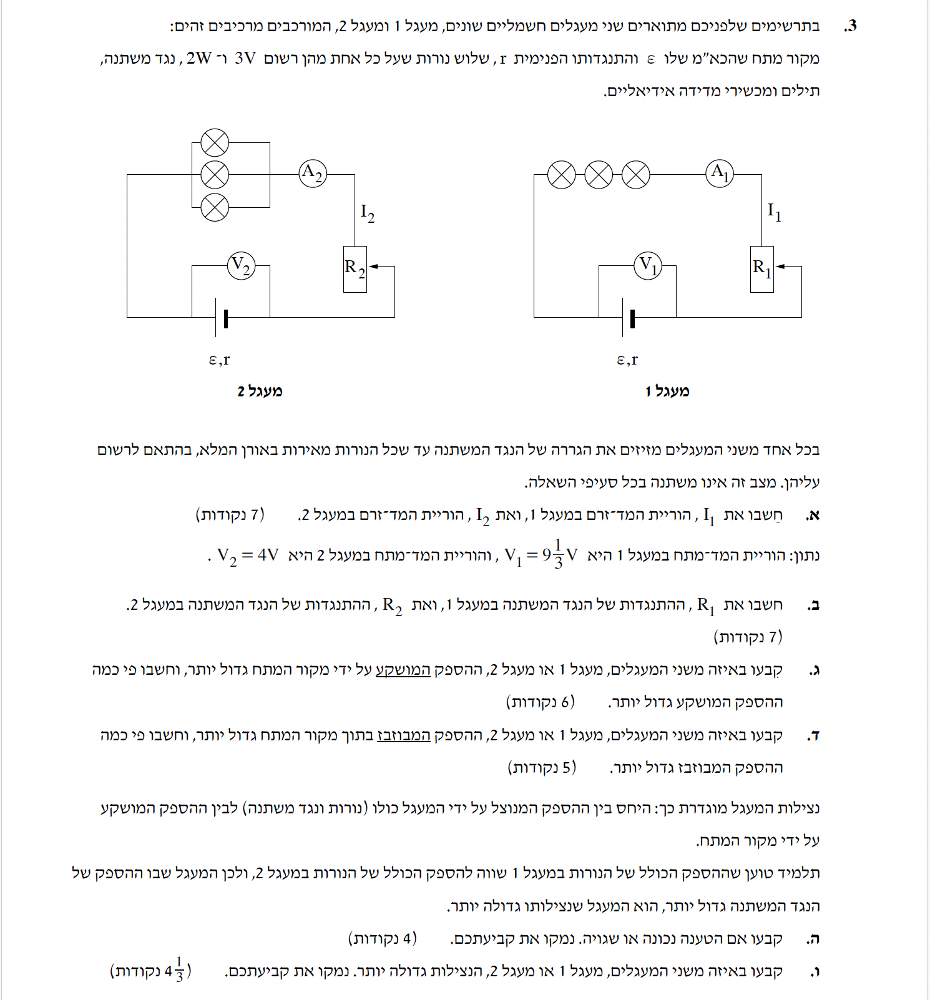
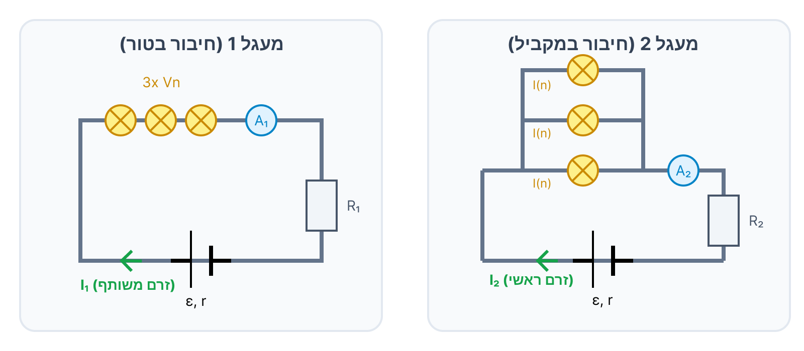

פתרון מודרך צעד-אחר-צעד: מעגלי זרם ישר, חיבור נגדים ונורות, ונצילות.

ברוכים הבאים לפתרון המודרך! בשאלה זו נעסוק במעגלי זרם ישר (DC), חיבור נגדים ונורות בטור ובמקביל, מקורות מתח בעלי התנגדות פנימית ונצילות המעגל החשמלי. נעבוד צעד-אחר-צעד, תוך פירוק פיזיקלי של התהליכים.
לפני שנתחיל, מומלץ להיעזר בתרשים הפיזור של הזרמים והמתחים בשני המעגלים שהרכבנו.

על כל נורה מודפסים שני מספרים על ידי היצרן, למשל \( V_n = 3 \text{ V} \) ו- \( P_n = 2 \text{ W} \). אלו הם הערכים הנומינליים (ערכי עבודה מתוכננים המוגדרים על ידי היצרן). כאשר השאלה מציינת שהנורה "מאירה במלואה" (או "באורה המלא"), זוהי הדרך הפיזיקלית להגיד לנו שהנורה עובדת בדיוק בתנאי היצרן האופטימליים שלה. כלומר, המתח השורר עליה בפועל הוא בדיוק המתח הנומינלי (\( V = V_n \)) ולכן היא מפיקה בדיוק את ההספק הנומינלי המקסימלי שלה (\( P = P_n \)).
מתוך שני הנתונים הללו, אנו יכולים לחלץ מיד שני מאפיינים פיזיקליים קריטיים, מתוך הנחה שהם מתקיימים כשהיא מאירה במלואה:
1. הזרם הזורם בה: בעזרת הנוסחה \( P = V \cdot I \), נוכל לחשב את הזרם הנומינלי הדרוש לה: \( I_n = \frac{P_n}{V_n} \).
2. התנגדות הנורה: בעזרת חוק אוהם \( R = \frac{V}{I} \) או הנוסחה \( P = \frac{V^2}{R} \), נוכל למצוא את ההתנגדות הפנימית שלה: \( R = \frac{V_n^2}{P_n} \). התנגדות זו נחשבת לקבועה ברוב שאלות הבגרות.
את הוריות מדי הזרם במעגלים. כלומר, את הזרם הראשי \( I_1 \) העובר דרך \( A_1 \), והזרם הראשי \( I_2 \) העובר דרך \( A_2 \).
נחשב את הזרם הנדרש להארה מלאה על פי נתוני היצרן:
שלוש הנורות מחוברות בטור יחד עם מד הזרם. בחיבור טורי הזרם זהה בכולן. מאחר והן מוארות במלואן:
הנורות מחוברות במקביל, הזרם הראשי מתפצל ל-3. מכיוון שהנורות מוארות במלואן, סכום הזרמים הוא:
מסקנה: הוריית מד הזרם \( A_1 \) היא \( 0.667 \text{ A} \), והוריית \( A_2 \) היא \( 2.00 \text{ A} \).
את התנגדות הנגדים המשתנים בכל מעגל (\( R_1 \) ואת \( R_2 \)).
הקשר למושגים: זוכרים את "רגע של למידה" מסעיף א'? מכיוון שנאמר לנו שהנורות "מאירות באורן המלא", המשמעות היא שהמתח הנופל על כל אחת מהן בפועל שווה בדיוק למתח הנומינלי שלה. לכן, אנו יכולים לקבוע בוודאות שהמתח על כל נורה הוא \( V = 3 \text{ V} \). נשתמש במידע זה כדי לפצח את המעגלים.
מתח ההדקים \( V_1 \) מתחלק בין 3 הנורות והנגד המשתנה המחוברים בטור. כפי שהסקנו כעת, המתח על כל נורה הוא \( 3 \text{ V} \).
במקביל המתח על כל נורה זהה למתח על כל קבוצת הנורות יחד (\( 3 \text{ V} \)). יתרת מתח ההדקים נופלת על הנגד המשתנה:
מסקנה: בשני המעגלים התנגדות הנגד המשתנה היא \( R_1 = R_2 = 0.500 \text{ } \Omega \).
זרמים שחושבו בסעיף א': \( I_1 = \frac{2}{3} \text{ A} \), \( I_2 = 2 \text{ A} \). מדובר באותו מקור מתח בעל כא"מ \( \epsilon \).
באיזה מעגל ההספק המושקע (על ידי מקור המתח) גדול יותר, ובכמה פעמים.
כדי לגלות "פי כמה" גדול הספק אחד מהשני, כל שצריך לעשות הוא לחלק אותם זה בזה. מכיוון שמדובר באותו מקור מתח, הכא"מ (\( \epsilon \)) זהה ופשוט יצטמצם מהמשוואה!
נציב את הזרמים שמצאנו:
מסקנה: במעגל 2 ההספק המושקע גדול יותר (פי 3.00).
הזרמים של שני המעגלים ומקור מתח בעל התנגדות פנימית \( r \) משותפת.
באיזה מעגל ההספק המבוזבז בתוך המקור גדול יותר, ופי כמה.
שוב, נשתמש בטריק האלגנטי של בניית יחס. אנו מחפשים "פי כמה" ומכיוון שההתנגדות הפנימית \( r \) זהה בשני המעגלים, היא תצטמצם מהביטוי:
כבר מצאנו בסעיף הקודם שהיחס בין הזרמים הוא 3, לכן:
מסקנה: ההספק המבוזבז בתוך מקור המתח גדול יותר במעגל 2 (פי 9.00).
תלמיד טוען שכיוון שהספק הנורות זהה בשני המעגלים (6W), המעגל שבו הספק הנגד המשתנה גדול יותר יהיה המעגל הנציל יותר.
לקבוע האם הטענה נכונה או שגויה ולנמק באופן פיזיקלי.
ההספק המנוצל הכולל של המעגל (\( P_{eff} \)) מוגדר כסכום ההספקים של כל הצרכנים החיצוניים אליהם המקור מזרים אנרגיה. במעגל שלנו הצרכנים הם הנורות והנגד המשתנה, ולכן נוכל לרשום:
התלמיד מבסס את טענתו על התבוננות רק במונה של הנצילות (ההספק המנוצל הכולל). אכן במעגל 2 הספק הנגד גדול יותר ולכן \( P_{eff} \) (ההספק המנוצל) במעגל 2 גדול יותר.
אולם, המכנה בנוסחת הנצילות הוא ההספק המושקע על ידי המקור \( P_{in} = \epsilon \cdot I \). כפי שראינו בסעיף ג', המכנה אינו קבוע ומשתנה דרסטית בהתאם לזרם:
הגידול העצום במכנה (ההספק המושקע גדל פי 3) גובר משמעותית על הגידול המתון במונה. התלמיד התעלם לחלוטין מהמכנה שמשתנה בעקבות הזרם השונה.
מסקנה: טענת התלמיד שגויה מיסודה מכיוון שהתעלם מהשתנות ההספק המושקע (המכנה).
מתחי ההדקים בשני המעגלים: \( V_1 = 28/3 \text{ V} \), ו- \( V_2 = 4 \text{ V} \).
באיזה מעגל הנצילות גדולה יותר (לנמק מתוך המשוואות).
נפתח את נוסחת הנצילות. ההספק המנוצל על ידי המעגל שווה למתח ההדקים כפול הזרם, וההספק המושקע הוא הכא"מ כפול הזרם:
מכיוון שהכא"מ (\( \epsilon \)) זהה בשני המעגלים (מדובר באותו מקור מתח), אנו רואים שהנצילות תלויה ביחס ישר למתח ההדקים. כלומר, ככל שמתח ההדקים גבוה יותר - כך הנצילות גבוהה יותר.
מכיוון שמתח ההדקים במעגל הראשון גדול משמעותית (\( \frac{28}{3} > 4 \)), המעגל הראשון הוא בהכרח בעל הנצילות הגדולה יותר.
מסקנה: במעגל 1 הנצילות גדולה יותר.